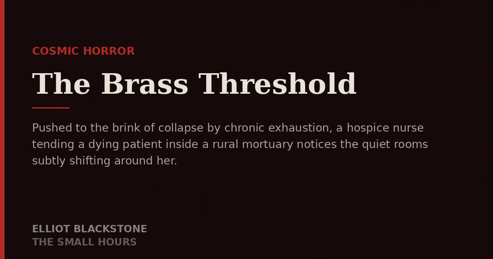

Cosmic Horror
The Brass Threshold
Pushed to the brink of collapse by chronic exhaustion, a hospice nurse tending a dying patient inside a rural mortuary notices the quiet rooms subtly shifting around her.
Read Full Story →